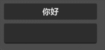
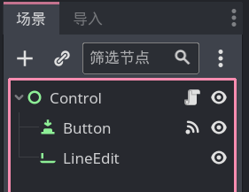
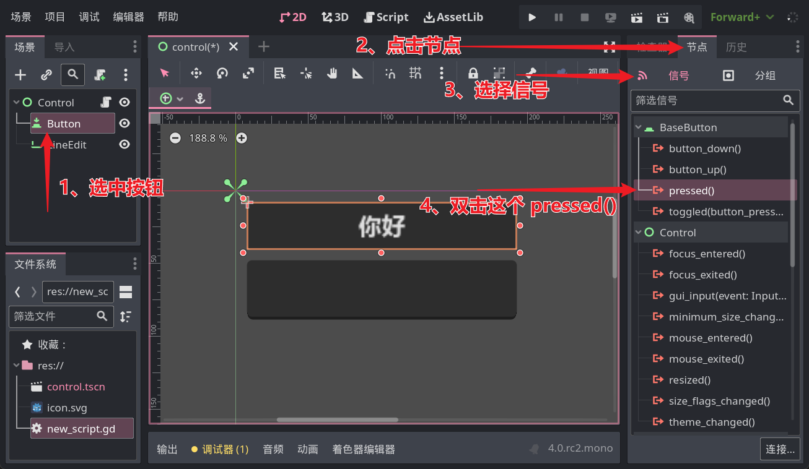
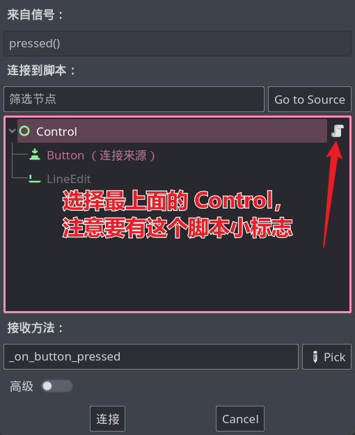
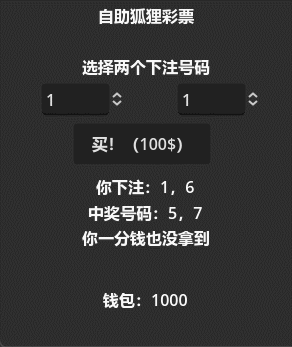
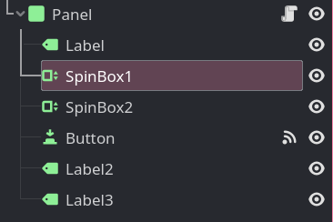

GDScript 零基础图文入门
各位热爱游戏的小伙伴们大家好。
随着 Godot 的热度越来越高，有很多无程序开发基础的小伙伴认识了 Godot，个人认为 Godot 从 4.0 版本开始，已经成为了最适合游戏开发新人上手的引擎（易上手 不等于 功能简单），她相较于 Unity 更易学习，且功能足够各位开发者实现自己的梦中游戏。
开发游戏通常离不开编写代码，Godot 支持的编程语言中 GDScript 和 C# 是使用最广泛的：
-
C#是微软公司开发的编程语言，虽然普及率不如Java、Python等“超一线”语言，但其功能十分强大，且拥有“宇宙第一优雅”的编程语法，但由于它真的很强大且语法实在“优雅”，学习它会花费更多的时间与精力。 -
而
GDScript听名字就知道这是 Godot 自己的编程语言，因为是为游戏开发而设计，语言中的每一项功能都是为了方便我们做游戏而诞生，因此在实现同样功能的情况下，GDScript会比C#少些很多代码，学习起来也更加轻松。
综上所述，我更推荐新人者从 GDScript 上手，这将是一条轻松愉悦的学习路线。
[!tip] 新人学编程第一大门槛：选择编程语言。
我这里要说：随便选一个语言就行（当然现在我推荐 GDScript 了就不要乱选了233），重要的是坚持学到最后，不要中途放弃或者换语言。其实绝大多数编程语言都是共通的，就像你学会合成铁镐子后自然就会合成钻石镐一样，当你通过本文学会
GDScript后，自然也会看的懂很多其它语言的代码。
[!tip] Godot 版本
编写本文时 Godot 刚刚推出了 4.0 rc2，所以文中按照 4.0 版本讲解。
关于本文
以前我在 Gamemaker 那边搞一对一教学来着，最近喜欢上了 Godot，发现这边完善的中文资料少之又少，我结合之前在 gamemaker 那边的教育经验编写本文，希望可以帮助各位。
我不是专业写东西的，所以文中肯定会出现问题，如有错误或疑问还请及时反馈，如果真的是本文出了问题，尽早改正可以防止误导更多人。
如果你有不懂的地方或者文中没提到但是想学的东西也欢迎联系我，各位的反馈和建议可以让文章更加完善。
Q: 为什么不录视频教程？
A: 首先视频教程制作太麻烦，其次，我认为通过视频学习东西其实更加费时费力，文档可以随时回头看，视频容易看一遍就自我感觉都会了。
整活章节或许可以尝试搞成视频试试，作为本文的补充。
反馈途径
可通过作者 QQ：2293840045 联系我，或者直接使用 git 仓库的 issue 等功能。
广告时间：本文作者靠在线一对一教学赚零花钱，如果你想 0 障碍快速学习游戏开发或者其他什么编程知识，欢迎联系我。
本文使用 Mdbook 编写。
开始
Godot 官网：https://godotengine.org/
Godot 最新正式版下载：https://godotengine.org/download/windows/
所有版本下载：https://downloads.tuxfamily.org/godotengine/
本文讲解 GDScript，所以下载普通版，就是没有 .NET 或 Mono 字样的版本即可。
什么是编程？
编程说白了就是写代码，而代码是控制计算机运行的指令。
对于游戏来讲，游戏中的每一处逻辑都是由代码来控制，游戏的运行离不开代码。
假设要实现玩家点击空格开火，不点空格回血这个逻辑，那么就需要写一段这种代码：
游戏中的每一帧都执行：
如果玩家点了空格：
开火
否则（没点空格）：
给自己加血
[!note] 伪代码
上文中这段奇怪的文字被称作伪代码，也就是说这并不是真正的程序代码，但是它可以更清晰的表达真实代码的逻辑，通常在设计某些复杂代码之前写出来当草稿用。
看起来这好像和编程没什么关系，但我没有糊弄你，真正的代码基本就是这个样子：
func _process(delta):
if Input.is_action_just_pressed("space"):
fire()
else:
hp += 1
我们学习编程，实际上就是把脑海中的伪代码转换成实际代码，为了完成这个转换工作，首先需要记住一些代码语法，但请注意，代码语法十分简单，这不应该是编程学习中的重点，真正需要你费头脑的是想出那些伪代码，至于语法格式，忘了就翻翻这篇教程，忘多了就会了。
在 IT 行业工作的程序员中有一种职位专门负责提供思路，也就是“创造伪代码”，那些底层的码农们就负责把“伪代码”翻译成程序语言。（很明显创造伪代码的人工资更高）
第一句代码
如果你就算只碰过一点点编程，应该也会见过这么一句话：
"Hello, World!"
这是计算机行业的元老级 meme 之一，当人们在学习一门新编程语言时，就会想办法让那个语言把上面这几个字母显示在屏幕上。
这时你可以打开 Godot，创建一个 Label，然后在 text 属性中写上 Hello, World!，运行后（或许不用运行）就会看到屏幕上出现了这几个字母，恭喜，你学会 GDScript了！

等等，那说好的代码呢？
很明显上面是一些玩笑话，但我建议你还是尝试一编上面的步骤，毕竟你是一位要成为边城带师的人，这种点点鼠标的操作还是要熟练掌握才行的
。
本文重点在 GDScript，不会涉及太多的引擎操作知识，如果你还不会引擎的基本操作，建议打开 Godot 到处点一点，很快你就会熟悉她的界面逻辑了。
给纯新人小伙伴的一个建议：放纵自己的好奇心，对感兴趣的东西先动手尝试再寻求帮助更好。
下面我来带大家用代码的方式显示一句话。
首先我们要明白 Godot 中构成游戏的基本单位是节点，也就是默认界面左上角的那些东西。我们写的代码被称作脚本（不是玩游戏开挂的那个脚本哈），每个节点可以绑定一个脚本来扩展节点的功能，因此想执行咱自己的代码，第一步就是要有一个节点。
目前随便创建一个节点即可，然后选中节点，点击添加脚本按钮：

在最后出现的窗口中，是对这个新脚本的设置，建议勾上内置脚本选项，其余目前不用改，接着点击创建即可。
接着咱就被带到了一个代码编辑器中，看起来应该是这样：
extends Control
# Called when the node enters the scene tree for the first time.
func _ready():
pass # Replace with function body.
# Called every frame. 'delta' is the elapsed time since the previous frame.
func _process(delta):
pass
第一行可能不太一样，这取决于刚刚创建的节点是什么类型。
现在目标聚焦 func _ready(): 这一行，在这一行的最后咱们加一个回车，然后输入 print("Hello, World!")，完事后这一段应该是下面这个样子：
func _ready():
print("Hello, World!")
pass
[!tip]
注意不要改动其他地方的代码，上面我放了三行代码只是完整代码的一部分，因为每次都贴完整代码太长了，所以我就省略了其他部分，但你不要省略。
注意 print 的前面应该是一个制表符，Godot 应该会自动帮你加上，如果你发现 print 和下面的 pass 没有垂直对齐，可能需要手动在前面输入一个制表符（按Tab键输入）。
接下来，保存场景、运行游戏，发动你的火眼金晶在屏幕上找到 Hello, World! 吧！

恭喜你已经成功运行了第一句 GDScript 代码！
[!warning] 常见问题
在编程时我们要保证自己的输入法处于英文状态，一般的编程语言不认识中文符号，看看你 print 后面的括号和双引号是英文的吗？
Hello, World!两边的双引号在这里表示中间夹着一段文字，因此不要省略这俩双引号！运行的场景要选择当前编写代码的场景，不要运行错了场景。（可以点击F6直接运行当前场景）
... 更多问题等待你的反馈，我会在这里解答
[!note]
print 这句话的功能其实就是在 Godot 引擎界面中显示一些东西，虽然玩家看不到，但对于我们开发者来讲通常会利用 print 进行一些排错工作，起到类似于日志的作用。
脚本结构
上一节咱们运行了一句代码，但我估计你应该还是比较蒙，这节就来看一下之前那篇代码的每一句话是什么意思。
代码语法之：注释
首先来认识一个最简单的语法，它叫做注释。
因为代码本质上还是给计算机看的东西，在逻辑复杂或代码太长时，人类阅读起来非常困难，人们就在代码中穿插加入一些小笔记来解释代码的逻辑和用法，这种小笔记就是注释了。
在 GDScript 中输入一个井号 # 就表示注释，从这个符号开始到这一行结束都属于注释范围，所以再来之前那篇代码，就会发现其中很多东西都是注释（方便理解，我把注释翻译成了中文）：
extends Control
# 在节点第一次进入场景树时执行
func _ready():
pass # 用方法体替换这里
# 每一帧执行一次，'delta' 指上一帧和这一帧的间隔时间
func _process(delta):
pass
可以看到，Godot 还贴心的留给了我们三句话。。。
[!tip]
注释不会被当作代码执行，如果你给刚才的 print 前面加上 # 号，那么 print 就不会执行了，所以有时遇到了某段代码不确定要不要删除，也可以先用注释的方式临时屏蔽。（虽然规范上不建议这样做，但是一个人开发的情况下老子就是规范）
代码语法之：方法
方法这个名称实在是抽象，它还有另一个名称叫做函数，行吧，也比较抽象。。。
你可以把方法理解成一段保存好的代码，在需要执行的时候调用一下就会执行。
GDScript 中使用 func 表示一个方法，后面紧跟一个方法的名字，所以再看上面的代码，我们会发现其中包含两个方法，分别是_ready和_process。
方法的最后有一个冒号，然后另起一行的内容就是方法体，也就是这个方法所包含的代码， pass 关键字表示这个方法没有代码，也可以把 pass 替换成咱自己的代码。
之前写的 print 下面还跟着一个 pass 呢，那个 pass 其实没用，删掉也可以。
方法和函数这两个名字我也经常混着用，如果看到后面发现我提到了函数这个词，要知道指的就是方法。
结合官方给的注释，现在我们大致明白之前的 print 代码是怎么回事了，因为咱把 print 放在了 _ready 方法当中，按照注释“在节点第一次进入场景树时执行”所说，咱们的 print 就跟着 _ready 在节点第一次出现时执行了一次。
[!tip] 还是有点蒙吗？
这一节的内容留个印象即可，后面会再详细讲解，现在只需要知道两件事：
_ready方法中的代码会游戏刚运行时执行
_process方法中的代码会在游戏运行时的每一帧执行
[!tip] 啥叫场景树？
Godot 中把一堆节点构成的东西称作树，那么场景树就是这个场景中节点所组成的树了。
至于进入场景树就是指加入到场景树中，也就是游戏刚开始时了。
后续预告
为了保证学习不枯燥，后续教程中会穿插一些实践内容，这些小节标题以整活开头，各位小伙伴也可以整自己的活，本文整活仅供参考，大家要发挥自己的想象力。
下一节将重点讲解 GDScript 的基础语法，这里包含很多代码逻辑相关的知识。
再下一节重点讲解面向对象思想，这是一种目前最流行的程序设计方式，Godot 也是完全在这套思想下运行的。
这两节就会把 GDScript 的语法都介绍完毕，后续内容则是 Godot 引擎本身的各种功能使用方式介绍。
最后，提醒各位新人，学习 Godot 要主动自学，这并不是因为 “Godot 资料少”一类原因造成的，因为每个人的心中都有属于自己的游戏，他人的教程终究不能完全覆盖你需要的知识。
基础语法
GDScript 是一门十分像 Python 的语言，但针对游戏进行了很多优化。
本章讲解基础语法，略微涉及一些实践内容。
变量
变量是代码中用来存放数据的基本单位（抛开计算机底层不谈），游戏中会变的量都是变量。
玩家的生命值、游戏分数这种直观看到的数字是变量，玩家的位置、任务进度这种抽象的数据也是变量。
在 GDScript 中使用 var 关键字声明一个变量，它的基本语法格式如下：
var <变量名> [= <变量值>]
比如咱们要存放玩家的生命值，咱就可以写一句 var 生命值 = 100，这就声明了一个叫做生命值的变量，其中存放的数据是 100。
[!tip] 语法格式解读
本文中使用上面这种格式展示语法，其中
尖括号引用的内容表示必须填写，并把尖括号内的东西换成改填入的字符，例如<变量名>就表示这里必须要写一个变量名，至于名字是什么你可以自己来定。方括号表示可选填写，var 语句后面的初始值其实是可以省略不写的，不过一般不会这样做。
变量声明的位置
这句 var 开头的代码可以放到方法体中，也可以放到方法体的外面：
var 生命值 = 100 # 放在了 _ready 的外面
func _ready():
var 生命值 = 100 # 放在了 _ready 的里面
当放在方法外面，也就是文件最外层时，表示这个变量属于当前节点，也就是说这个节点现在拥有了生命值这个属性，这个变量随着节点一起出现和消失。
当放在方法里面时，这个变量就成了一个临时变量，当方法被执行，程序运行到 var 语句这一行时就会创建这个变量，当方法执行完毕时，这个变量就会自动消失。
因此可以感觉到，如果要处理一个持续的数据，应该把变量的声明放在方法的外面。
变量赋值
现在假设咱们给节点声明了生命值这个变量，现在希望它每帧扣除一滴血，这时就可以使用变量赋值语句来修改变量的值，赋值语句格式如下：
<变量名> = <新的值>
可见其实就是把 var 关键字去掉了而已，既然这样，实现扣除一滴血的代码就可以这样写：
func _process(delta):
生命值 = 生命值 - 1
由于 _process 是每帧执行一次，所以上面代码就实现了每帧扣除一点血。
注意不要在前面加上 var，否则就成了每帧声明一个新变量。
[!tip] 什么是关键字
关键字就是指 GDScript 中具有特殊含义的一些单词，例如 var，他就表示创建变量。
[!tip] 中文变量名
Godot 从 4.0 beta 1x 的某个版本开始支持中文变量名，但大多数人更喜欢英文变量名，本文为了阅读方便考虑（我怕我英语渣闹笑话）采用汉字变量名。
[!tip] 声明？创建？
在 生命值 这个例子中声明就等于创建，但不要和后面要学到的创建（实例化）对象搞混。
[!note] 变量名命名规则
上面提到了，变量名是自己起的，但很明显不能乱起，例如我让一个变量叫 var，这肯定很怪，所以变量名有以下规则：
不能使用数字开头
不能包含特殊字符，例如空格、加号等（唯一支持的符号是下划线 _）
不能换关键字重复（例如 var）
本文为了阅读方便，将尽量使用中文命名，这样读者可以根据变量名快速区分 Godot 内置变量和我们定义的变量，不过在一般的开发中，变量名还是以英文为主。
数据类型
对于人类来讲，看到 5 就知道这是数字，看到 Hello 就知道这是单词，那么数字和单词这种概念在计算机中就被称为数据类型。
GDScript 中的基本数据类型有这些：
- 整数，例如
100100都是整数 - 小数，例如
3.140.10.04.0都是小数 - 字符串，与双引号或单引号包裹的内容是字符串，例如
"Hello, World!""我是字符串"都是字符串 - 布尔值，这种类型表示真假或对错，只有
true和false这两个值，对应真和假
下面是使用时的例子：
var hp = 100
var pos = 4.2
var name = "Rika"
var walking = false
[!tip] 代码格式
实际上变量名后面可以不写空格直接跟上等于号，我为了美观让这些等于号垂直对齐了，实际开发中根据自己喜好加空格即可。
不过，通常的编码规范都要求能加空格的地方至少加一个空格，毕竟密麻麻的字母看起来容易眼花。
其实大部分代码编辑器都有自动格式化代码的功能，可以一键美化代码，可惜目前的 Godot 还不支持（截止 4.0 rc2）
数据类型转换（自动）
我们看一段代码：
var a = 10
var b = 3.14
var c = a + b
首先我们定义了一个变量 a，它存放整数 10，又定义变量 b，存放小数 3.14，最后定义变量 c 存放 a 与 b 的和，那么问题来了，变量 c 中存放了一个什么类型的数字呢？
a + b 这个式子是 整数 + 小数 的形式，为了能够正确的到 13.14 这个数，他的结果显然是小数类型。
虽然整数参与了运算，但结果是小数，也就是说这其中自动进行了数据类型的转换，不过因为是自动进行的，所以我们通常不用在意。
这种自动类型转换在不同语言中有不同的名字，例如有的叫 隐式类型转换，有的叫 自动类型提升，这东西和计算机存储数据的原理有关，在这里就不过多讨论了。
为什么需要数据类型转换？
我们再看一段代码：
print(10 / 3)
思考，这会显示什么呢？
按道理讲这应该会显示 3.一堆3，但实际我们只能看到一个数字 3，这是因为这个 10 / 3 是整数运算，这种情况下得到的结果也必定是整数，因此就看不到小数点后面的内容了。
这时我们可以手动修改一下：
print(10 / 3.0)
对于 GDScript 来说，只要数字包含小数点，即便小数位全是 0，这个数也是小数类型，所以修改后的 print 就能正常显示 3.一堆3 了。并且这其中还对整数 10 进行了自动类型转换。
计算机存储空间有限，小数位数肯定也有限，实际显示的是
3.33333333333333，不会特别长。
如果想要运行看看效果，记得把这些代码都放到
_ready():这个方法体中再运行游戏。
数据类型转换（手动）
有自动类型转换，肯定也就有手动类型转换了，现在把刚刚的 10 / 3 代码稍作修改：
var a = 10
var b = 3
print(a / b)
这个的结果大家已经知道，就是 3，现在假设，变量 a 和 b 是从其他地方获取的值，这个值就是整数，不能通过添加小数点的方式让它变成小数。
于是需要我们手动进行类型转换了，它的语法格式如下：
<目标类型>(<被转换的值>)
其中目标类型可选如下：
int- 整数float- 小数bool- 布尔值
我们需要把整数变成小数，所以目标类型就是 float，接着来修改 print 这一行：
print(float(a) / float(b)) # 只给一个变量加上 float 也行，另一个会自动转换类型
接着就能再次看到 3.一堆3 了。
[!tip] 四舍五入
int(1.9)的结果是 1，也就是直接抛弃小数，如果想要四舍五入取整，可以改成round(1.9)，这样结果就是 2 了。
[!tip] 函数调用
你应该已经发现，
float(XXX)这种东西和print(XXX)的格式一摸一样，这种格式被称为方法调用，在后面方法章节会单独讲解。
表达式与运算符
表达式是由一些值和运算符组成的式子，例如 10 + 2 这种。
GDScript 中表达式分为这么几类：
- 算数表达式
- 关系表达式
- 逻辑表达式
- 赋值表达式
算术表达式
顾名思义，算是表达式就是指数学运算的式子，例如 5 + 2 100 * 0.5 等，运算符有这些：
+加-减*乘/除%求余（取模）
最后一个取余数可能有点忘了是什么，其实就是小学二年级还没学小数的时候，“两个数除不尽”剩下的那个数，例如：
print(10 % 3) # 显示 1，因为 10 / 3 商 3 余 1
print(15 % 5) # 显示 0，因为 15 / 5 商 5，正好除尽
同时不要忘记先算乘除后算加减，必要时使用括号改变运算顺序：
((10 + 4) * 2 - 8) * 2
不要轻视这个小学知识点，在修改代码时可能会忘记前后的符号导致运算优先级出错，这种 bug 找起来十分麻烦。
[!tip] % 的优先级
是先求余还是先加减乘除？哈哈，我不告诉你。
当你的式子很长时，建议用一个临时变量保存一下中间结果，保证编程思路的清晰比什么都重要。
如果真的要在式子里混合求余运算符呢？那就加括号呗。
（
我写了七八年代码也没记住 % 的优先级，毕竟没有必要记住）
[!tip] 负数
直接在数字或变量前加一个减号即可表示负数，例如
print(-10)，或是先var a = 1再print(-a)即可显示-1
[!note] 字符串拼接
加号 + 的两侧若为字符串，还表示字符串拼接，例如
var a = "a" + "b"，那么 a 里面就会存放ab这两个字符。
关系表达式
关系表达式的运算符如下：
>大于<小于>=大于等于<=小于等于==等于!=不等于
这些应该也没什么好讲的，那么看一句代码：
print(10 > 9)
嗯，很简单，可是......它会显示什么呢？
这时要了解关系表达式的一个特点：它的结果是布尔值，也就是 true 或 false。
因为 10 > 9 这是个正确的不等式，所以结果是 true，假如有一句 print(10 == 9)，那么这就会显示 false 了。
逻辑表达式
逻辑表达式的运算符有这些：
not非（否）and与（同时为 true）or或（任意为 true）
乍一看比较蒙，根据括号里的词语理解一下，这三个运算符是对布尔值进行计算的。
第一个 not 是一个一元运算符，它只对一个数据进行操作，写在被操作数的前面，例如 not false 就表示 true。
and 运算符只有在两侧都为 true 时结果才是 true，否则结果一律为 false
or 与 and 相反，两侧都为 false 结果才是 false，否则结果为 true。或者理解成只要有一个 true，结果就是 true。
赋值运算符
我们一直看到的等于号 = 其实就是一个赋值运算符，它的作用就是把右边的值放到左边的变量中。
其他的常用赋值运算符还有 += -= *= /=，他们分别表示根据变量中原有的值进行相对运算并保存到变量中，例如：
var a = 10
a += 10 # a 在原来的基础上又加了10，变成了20
a *= 2 # 由于上一句代码，a已经是20了，再乘上2，就变成了40
a /= 10 # 40 / 10 得到 4，a变成了4
print(a) # 显示 4
多种运算符混合计算
我们貌似已经发现了规律：
- 数学运算符的参数是数字，结果是数字
- 关系运算符的参数是数字，结果是布尔值
- 逻辑运算符的参数是布尔值，结果是布尔值
所以，当上述多种运算符组合在一起时，会先运算数学运算符，接着是关系运算符，然后运行逻辑运算符，当然最后是赋值运算符。
[!tip] 等于和不等于
==和!=两侧的值不一定是数字，例如"Abc" == "Abc"的结果是true，"123" == 123的结果是false。
综合例子
现在来测一测自己，下面这段代码的每个 print 会显示什么？
print(5 - 3 < 10)
var a = 100
print(a >= 100 and false)
a -= 99
a *= 10
print(a + 10)
答案在下面
.
.
.
.
.
.
.
.
.
.
.
.
true
false
20
整活：你好XXX
经历了枯燥的变量、数据类型、运算符的学习，欢迎来到第一个整活章节。
哈哈，也不要以为整活章节就不用学东西了，毕竟想一想，就目前学的 GDScript 能整什么活呢？
所以在整活章节中，我们需要学习 GDScript 操作 Godot 游戏的方法，这一节咱们实现这样一个功能：

这里有一个按钮和一个输入框，点击按钮后，按钮上就会显示 你好：<输入的内容> 这句问候。
场景创建
场景很简单，共有三个节点：

添加好后调整它们的位置即可，怎么摆放大家随心即可。
接下来给最外层的 Control 节点添加一个内置脚本，暂时不需要修改里面的内容。
然后关键步骤来了，选中按钮，接着点击引擎右边的 节点 选项卡，进入 信号 列表，找到其中的 pressed() 并双击：

然后就会看到一个弹窗，在窗口中选中添加了脚本的 Control 节点并点击连接

然后我们的脚本中就会多出一个 _on_button_pressed 方法，应该长这样：
func _on_button_pressed():
pass # Replace with function body.
解读
当按钮被点击时，就会发出 pressed 信号，而现在按钮的 pressed 信号连接了脚本中的 _on_button_pressed 方法，就意味着点击按钮就会执行这个方法，你可以在方法中先写一句 print 试试。
获取节点
既然要获取输入内容，就要先找到输入框节点，获取节点的语法是这样的：
$<节点路径>
目前输入框的节点路径就是他的名字，所以咱可以在 _on_button_pressed 方法中写下：
var 输入框 = $LineEdit
var 按钮 = $Button # 顺手把按钮也拿到
获取节点属性
输入框节点的 text 属性表示输入的值，通过一个小数点的点 .，可以从节点中获取属性，所以：
var 输入值 = 输入框.text
按钮的显示文字也是 text 属性控制的，所以把这个输入值加上前缀，再交给按钮的 text 就完成这节整活了。
按钮.text = "你好：" + 输入值
最终的完整方法应该长这样：
func _on_button_pressed():
var 输入框 = $LineEdit
var 按钮 = $Button # 顺手把按钮也拿到
var 输入值 = 输入框.text
按钮.text = "你好：" + 输入值
代码块
之前我们简单介绍了一下代码块概念，这里再复习一下。
代码块就是指一片代码的集合，通常使用一个冒号 : 开头，然后使用相同的缩进表示，某些其他语法需要由代码块来组成。
例如方法：
func _ready():
print("我是代码块里第一行代码")
print("我是代码块里第二行代码")
现在假设有一个 print 向右缩进了一点：
func _ready():
print("我是代码块里第一行代码")
print("这一行会出错")
由于第二个 print 缩进和上面不一致，那么这个 print 就不属于方法的代码块了。
同理，向左缩进也一样。
分支结构
我们之前写的代码其实并没有什么逻辑可言，它们只会按照顺序一行行执行而已。
在真正的游戏中有很多分支，例如玩家与 NPC 对话时，如果完成了任务，NPC 就会给玩家奖励，否则 NPC 就会告诉玩家一些任务提示。这里的任务是否完成就是一个分支条件。
如果
在程序中使用关键字 if 来表示分支，它的语法格式如下：
if <逻辑表达式> :
<代码块>
if 可以直接理解成汉语中的如果，当逻辑表达式的值为 true 时就会执行下面的代码块，否则就不执行。
其中的逻辑表达式就是指一条运算结果为逻辑值的式子，现在假设咱有个变量 var 任务完成数 = 10 来表示当前完成了几个任务，当完成 20 个任务时显示恭喜通关：
func _ready():
var 任务完成数 = 10
if 任务完成数 >= 20:
print("恭喜通关了")
目前运行游戏的话你会发现什么也没有显示，毕竟任务完成数现在是10，if 后面的条件不满足，也就不会执行里面的代码。当然你可以手动把变量值改成 20 以上的数字再试试。
否则
现在想完善一下刚才的程序，在任务完成数量不达标时提示玩家需要完成更多任务，那么以目前学到的知识，我们可以写成这样：
func _ready():
var 任务完成数 = 10
if 任务完成数 >= 20:
print("恭喜通关了")
if 任务完成数 < 20:
print("完成的任务还不够多")
这样虽然可以实现效果，但是我们可以发现两个 if 的条件语句正好相反，这时可以把第二个 if 语句替换成 else 语句：
if 任务完成数 >= 20:
print("恭喜通关了")
else:
print("完成的任务还不够多")
很明显这个 else 就是否则的意思，当上一个 if 条件不满足时则执行。
否则-如果
现在我们想让这个例子更复杂一些，具体规则如下：
- 当完成 20 个任务时显示 恭喜通关
- 完成 15-19 个任务时显示 马上就完成了
- 完成 5-14 个任务时显示 加油
- 完成 5 个以下时显示 这才刚刚开始
于是我们可以写出：
if 任务完成数 >= 20:
print("恭喜通关")
else:
if 任务完成数 >= 15:
print("马上就完成了")
else:
if 任务完成数 >= 5:
print("加油")
else:
print("这才刚刚开始")
这一层一层的 else 语句看起来实在是不好看，那么再认识一个新的关键字：elif
elif 就是 else 和 if 的组合形式，它会在上一个 if 的条件不满足时判断自身条件，如果自身条件满足则执行自己的代码，同时 elif 可以多个串联使用。
修改之前的代码，使用 elif 语句的结果如下：
if 任务完成数 >= 20:
print("恭喜通关")
elif 任务完成数 >= 15:
print("马上就完成了")
elif 任务完成数 >= 5:
print("加油")
else:
print("这才刚刚开始")
[!tip] 条件判断可以避免重复
想想我们的条件中提到的是15-19个任务显示马上就完成了，但为什么我们的 if 和 elif 后面之判断了
任务完成数 >= 15呢？这里就要想一下 else 和 elif 的一个特点：只有在上一个 if 或 elif 的条件不满足时才判断。
由于第一个 if 已经判断了
任务完成数 >= 20的情况，那么下面的所有 elif 和 else 中的任务完成数就不可能包含 20，所以我们就只判断>= 15即可。
[!tip] bool 值变量可以直接放到表达式里
一个变量也可以组成表达式，假设有个变量
var a = true，想判断 a 是否是 true 时千万不要写if a == true，直接写if a即可。（虽然写成第一种也不会出错，但就是会显得自己编程水平不好......）
作用域
我们来看一段代码：
var a = 10
if a > 0:
var b = 6
print(b)
看起来没有什么问题，应该会显示一个数字 6 吧？
运行一下试试，不出意外的话就会出现意外了，Godot 说 print(b) 是错误的，因为变量 b 不存在。
这也很好理解，比如我们把变量 a 的初始值改成 -100，那个 if 就不会执行，自然就没有执行到 var b = 6 这一行，此时确实没有变量 b。
这里介绍一下变量作用域，也就是变量的生效范围。
规则只有一条：内层代码块可以访问外层代码块的变量，但反之不行。
上例中，var b = 6 这一句话就是在 if 的内层作用域当中的，而在 if 之外的 print(b) 在位外层作用域，就不能访问内层的变量。
现在修改代码：
var a = 10
if a > 0:
var b = 6
print(a)
整活：狐狸彩票
这节整活来实现一个买彩票的小游戏，简单概括如下：
- 刚开始你有 1000 块钱
- 彩票售价 100 块
- 彩票下注需要两个数字，这两个数字都是个位数，不能是 0
- 猜中一个数奖金 300，猜中两个奖金 3000
玩起来大概这样：

场景创建
这个界面需要这么几个东西：
- 标题
- 两个数字输入框
- 一个购买按钮
- 一个显示结果的 label
- 一个显示钱包的 label
我创建的节点长这样：

逻辑分析
我们现在已经知道了游戏的逻辑，但是该如何将其转换成代码呢？
首先我们需要一个变量来保存钱包里的钱，并在按下购买按钮时对其进行判断，如果金钱足够则扣钱并进行买彩票的逻辑，如果金钱不足则显示钱不够。
所以我们可以得到这样一段伪代码：
当按下按钮时:
if 钱包的钱足够买一张彩票:
扣钱
获取输入的两个数字
随机抽取两个数
判断随机数和输入的数字是否相等并以此产生奖金
显示获奖结果
else:
显示“你的钱不够了！”
我的脚本编写参考
这里是我编写的代码，可以作为参考，你也可以尝试自己翻译一下上面的伪代码。
脚本放置在最外层的 Panel 节点上，然后绑定按钮的 pressed 信号。
界面布局和组件设置一类的操作我就不再讲解了，大家随意点击自己琢磨即可，没有什么特别难的地方。
代码：
extends Panel
var 钱包 = 1000
func _on_button_pressed():
if 钱包 >= 100: # 看看有钱吗？
# 先交钱
钱包 -= 100
$Label3.text = "钱包：" + str(钱包)
# 获取下注的两个数字
var 下注数a = $SpinBox1.value
var 下注数b = $SpinBox2.value
# 随机产生两个数字
var 随机数a = randi_range(1, 9)
var 随机数b = randi_range(1, 9)
# 在消息 label 上显示随机产生的两个数，最后的 "\n" 表示换行。
$Label2.text = str(随机数a) + ", " + str(随机数b) + "\n"
# 判断两个数字是否赌对了
var a赌对了 = 下注数a == 随机数a
var b赌对了 = 下注数b == 随机数b
# 根据两个数字的猜测结果加钱
if a赌对了 and b赌对了:
$Label2.text += "全猜对了！奖金 3000"
钱包 += 3000
$Label3.text = "钱包：" + str(钱包)
elif a赌对了 or b赌对了:
$Label2.text += "猜对一个，奖金 300"
钱包 += 300
$Label3.text = "钱包：" + str(钱包)
else:
$Label2.text += "你一分钱也没赚到"
else: # 穷了
$Label2.text = "你已经没钱下注了"
这里唯一一个陌生的东西就是 randi_range 了，它会根据括号里填入的数字生成一个随机整数，包含这两个数以及两数之间的数。
注意不要把钱包变量的定义放在方法里
循环
某些代码可能会反复执行多次，比如咱们要显示 100 个 hello，利用循环语句即可只写一个 print。
循环语句语法格式：
while <条件表达式>:
<代码块>
这和基本的 if 语句是一样的，只不过换成了 while 关键字，执行逻辑为：如果条件为真，则执行一次代码块，然后再判断条件，如果条件还为真，则再执行代码块，然后反复判断 + 执行，直到条件为假。
那么咱的 100 和 hello 就可以这样写：
var 计数 = 0
while 计数 < 100:
print("hello")
计数 += 1
可以尝试思考一下，执行完这段代码后，
计数变量的值是多少？
死循环
写循环时最容易出现的错误就是死循环，死循环并不是说循环死了，而是循环一直活着，例如：
var 计数 = 0
while 计数 < 100:
print("hello")
我删掉了 计数 += 1 这一句代码，此时的 计数 变量将一直为 0，while 的条件也就永远为 true，所以这个循环会反复执行停不下来，这种代码会导致游戏卡死，甚至需要任务管理器才能退出，不过好在开发阶段可以点击 Godot 右上角的停止按钮来结束游戏。
[!note]
游戏画面的更新和执行代码并不是同时进行的，他们的执行顺序可以简单理解为交叉进行，例如：
代码 -> 更新画面 -> 代码 -> 更新画面 -> 代码 -> 更新画面 -> ...
由于代码执行的很快，所以玩家眼中游戏画面是连续的，但如果现在有一个死循环或很长很长的循环，画面自然就会卡住。
数组
现在假设我们要给玩家设计个背包，可以装三个物品：
# 只是举个例子，暂时就存字符串了。
var 背包格子1 = "水瓶"
var 背包格子2 = "钥匙"
var 背包格子3 = "金币"
print("背包中有：")
print(背包格子1)
print(背包格子2)
print(背包格子3)
这样我们就定义了三个变量来表示三个背包格子，但如果背包升级了呢？现在变成了 10 个格子，总不能定义 10 个变量吧。
数组定义
于是我们来认识一个新的数据类型：Array，中文名数组（也有人叫集合）。
数组就是一堆数据构成的组，在 GDScript 中使用一对方括号表示数组，在方括号中填入要保存的数据，数据之间用逗号分隔，例如使用数组制作背包：
var 背包 = ["水瓶", "钥匙", "金币"]
数组元素引用
这样咱就把很多物品放到了一个变量里，在想要访问背包中的物品时，使用 数组变量名[下标] 来访问：
print("背包中有：")
print(背包[0]) # 显示：水瓶
print(背包[1]) # 显示：钥匙
print(背包[2]) # 显示：金币
print(背包) # 显示：["水瓶", "钥匙", "金币"]
方括号里的数字其实就是序号，这里的 [0] 表示背包中的第一个东西，也就是 水瓶。
这种语法也可以用来给数组中的元素赋值，例如：
背包[0] = "空" # 把水喝了
[!tip] 下标从 0 开始数
程序员笑话：你的右手有几根手指头？0.1.2.3.4，四根！
添加数据
使用 <数组变量>.append(<值>) 的形式可以向数组中添加新的值，例如：
背包.append("苹果")
背包.append("一本书")
获取长度
使用 len(<数组变量>) 获取一个数组的长度，例如：
var 背包 = ["水瓶", "钥匙", "金币"]
print(len(背包)) # 显示一个数字 3
注意了，长度可不要从 0 开始数。
删除数据
使用 <数组变量>.remove_at(<下标>) 删除指定位置的元素，例如：
var 背包 = ["水瓶", "钥匙", "金币"]
背包.remove_at(1)
print(背包) # 显示：["水瓶", "金币"]
遍历
我们现在有了背包，如果现在要每行显示一个背包物品，我们可以：
var 背包 = ["水瓶", "钥匙", "金币"]
print("背包中有：")
print(背包[0]) # 显示：水瓶
print(背包[1]) # 显示：钥匙
print(背包[2]) # 显示：金币
很明显这样做只能显示背包的前三个物品，假设背包很大就不能这样写了。
此时结合之前的 while 语句和 len() 获取数组长度，可以改成下面这样：
var 背包 = ["水瓶", "钥匙", "金币"]
print("背包中有：")
var 下标 = 0
while 下标 < len(背包):
print(背包[下标])
下标 += 1
我们声明了一个变量下标，并在循环中通过这个下标从背包中取物品，同时给下标加一，这样就可以访问背包中的每个东西，直到 下标 < len(背包) 为 false，也就是下标达到背包大小时停止。
[!tip]
注意不要写成
下标 <= len(背包)，这里不能等于，因为背包的长度是 3，而背包[3]是在获取第四个值，程序会出错。
for
上面这种把数组中每个元素都访问一次的行为被称为遍历，这种操作非常常见，于是有了一种专门为遍历而生的语法：
for <元素变量名> in <遍历目标>:
<代码块>
这个东西本质上还是个循环，循环次数就是遍历目标的长度，每一轮循环中，都将从遍历目标里取出一个元素放到元素变量中。
把之前的 while 换成 for，运行结果不变，代码如下：
var 背包 = ["水瓶", "钥匙", "金币"]
print("背包中有：")
for 物品 in 背包:
print(物品)
range
有时候我们想直接指定循环次数，例如显示 50 个 hello，这样直接用一个变量和 while 也可以搞定，但我们可以结合 range 方法和 for 来实现同样的效果：
for 当前次数 in range(50):
print("Hello")
range 这个方法会根据括号里的数字产生一个数组，里面分别是 1、2、3、4...直到括号里的数字，但不包括那个数。
循环控制
某些时候我们可能想要提前结束循环，比如实现功能：显示玩家背包中金币前面的内容。
var 背包 = ["水瓶", "钥匙", "金币", "帽子"]
var 发现金币 = false
for 物品 in 背包:
if 物品 == "金币":
发现金币 = true
if not 发现金币:
print(背包)
这段代码可能略微复杂，大家可以先试着理解一下，就当复习一下前面章节了。
当然这么麻烦的代码实际开发中是不会写的，因为 GDScript 中有两个循环控制关键字。
break
首先认识第一个：break。
它的功能就是当执行到的时候跳出循环，不再进行后续操作。
这时就可以修改上面的代码：
for 物品 in 背包:
if 物品 == "金币":
break
print(背包)
当发现遍历到的物品是金币时，就跳出这个 for，也就不再显示金币和后面的内容了。
continue
第二个：continue。
它的功能是执行到的时候提前进入下一次循环。
比如现在咱们想要显示所有的个位奇数：
for i in range(10):
if i % 2 == 0: # 是否时偶数
continue
print(i)
这个逻辑其实不用 continue 就可以，大家可以自己研究。
认识面向对象
面向对象（简称OOP），最流行的编程方式。
对于游戏开发而言，面向对象编程方式是最符合人类逻辑的，甚至给你一种编程也是玩游戏的感觉。
这一章内容不多，但都是理论概念上的东西，没有啥整活章节，可能略枯燥，不过下一章整活丰富，希望各位坚持看完本章。
方法
我们之前简单了解过方法，知道使用 func 关键字表示一个方法。
方法本质上就是一堆代码的集合，这些代码共同构成某些功能，例如 Godot 内置的 print 方法就是输出文字，str 方法就是把某些东西转换成字符串。
如果我们想要创造一个自己的方法，则可以使用这种语法：
func <方法名称>([参数列表]):
<方法体>
参数列表我们下节再讲，现在，如果我们想要从两个输入框里获取文字，将它们拼接起来并显示：
func 输出拼接结果():
var 文字1 = $LineEdit1.text
var 文字2 = $LineEdit2.text
print(文字1 + 文字2)
然后在需要使用这段代码的地方使用调用语句：
输出拼接结果()
把某段常用的代码保存成方法是一个良好的习惯，这样做可以减少代码数量，提高代码复用率，这算是方法最根本的用法。
[!tip]
虽然目前没在圆括号里写任何东西，但这个括号还是不能省略的。
完整的例子如下：
extends Node3D
func _ready():
输出拼接结果()
func 输出拼接结果():
var 文字1 = $LineEdit1.text
var 文字2 = $LineEdit2.text
print(文字1 + 文字2)
注意不要把方法写错了位置，它不应该嵌套在另一个方法中。（方法内定义方法会在以后讲解）
方法-参数
参数可以用来控制方法，例如我们之前接触的 print("Hello")，这其中的 "Hello" 就是一个参数，他控制了 print 方法要显示什么内容，再例如 int(n) 其中的 n 就控制把谁转换成整数。
现在回看我们上一节写下的方法，他只能固定的显示输入框1和输入框2的内容，如果想让他显示任意两个输入框的内容，就可以加入参数。
参数可以写很多个，每个参数之间使用逗号分隔，修改后的方法定义如下：
func 输出拼接结果(左边的输入框, 右边的输入框):
var 文字1 = 左边的输入框.text
var 文字2 = 右边的输入框.text
print(文字1 + 文字2)
参数本质上就是变量，这些参数变量会在被调用时赋值，在调用的地方这样写：
输出拼接结果($LineEdit1, $LineEdit2)
就表示将 $LineEdit1 的值传递给了 左边的输入框 这个参数变量，另一个参数同理。
[!tip]
$xxx这种语法会得到一个 Node 类型的值，表示场景中的一个节点。
方法-返回值
某些方法调用语句可以作为数值使用，例如 var a = int(1.2)，我们知道右侧的 int(1.2) 会变成数字 1，那么这个 1 就被称为 int(1.2) 的返回值。
返回值其实就是一个方法的计算结果，在方法中使用 return 关键字表示返回值。
例如我们不再希望输出拼接结果方法直接显示输入框拼接的结果，而是将结果保存到某个变量中，则可以修改成这样：
func 输出拼接结果(左边的输入框, 右边的输入框):
var 文字1 = 左边的输入框.text
var 文字2 = 右边的输入框.text
return 文字1 + 文字2
调用的地方写成：
var 拼接结果 = 输出拼接结果($LineEdit1, $LineEdit2)
return 结束方法的执行
因为 return 关键字表示方法的计算结果，当结果产生时方法就没必要继续执行了，所以 return 关键字还会停止方法的执行，就类似循环中的 break 语句：
func 输出拼接结果(左边的输入框, 右边的输入框):
var 文字1 = 左边的输入框.text
var 文字2 = 右边的输入框.text
return 文字1 + 文字2
print(文字1 + 文字2) # 这句 print 是永远不会执行的。
面向对象
对象，其实就是平时我们口中的“东西”，每一个“东西”，在程序中都可以抽象成对象，例如游戏中的一个箱子、敌人、门，甚至是 UI 上的一个按钮、一张图片都可以理解成对象。
对象拥有两种最基础的东西：
- 属性
- 方法
属性是用来描述对象的，例如箱子的大小、敌人的血量，说白了就是变量，只不过这个变量是属于一个对象的。
方法则是对象可以进行的动作，例如打开箱子、敌人受伤、开门操作，说白了就是一段代码，也就是用 func 定义的方法。
Godot 中的对象还可以有信号，这个以后再讲。
类
面向对象中有两个词会经常提到：类 和 实例。
类，可以理解成对象的模板，同时也是一种 GDScript 中的语法，定义一个类就等于定义了一种对象，但注意，是定义了一种对象而不是一个对象。
实例，指的是根据一个类创建出来的对象，是一个切实存在的东西。
例如，某个游戏有一种敌人，它拥有生命值、攻击力、等级这三个属性，刚刚这段描述这个敌人的话就等于是创建了这个敌人的类。现在玩家开始了游戏，面前生成了三只这种敌人，那么这三只敌人就被称为敌人实例。
再例如我们三次元生活中，比如手机，我只说手机这两个字，那么这就是类，因为手机是一种东西而不是切实存在的特定物体，但如果我说你的手机，这就是一个切实存在的特定物体，那么你的手机就是一个实例，并且是手机类的实例。
回到 Godot，如果你理解了上面的内容，那么你就知道 $LineEdit 所获取的是一个输入框实例，因为所获取到的这个输入框是场景中切实存在的。
[!tip] 不要弄混节点名和类型
$ 符号后面填写的是节点的名字，这个名字可以在引擎界面左上角的节点列表中修改，如果咱把节点的名字修改成了汉字：
一个输入框，那么代码就需要改成$一个输入框才行。容易弄混的是，Godot 中输入框类的名字也是 LineEdit，记住 $ 符号后面是节点名而不是类名即可。
类成员
阅读过程中请斟酌
类与实例这两个词，理解它们的区别。
属性
属性定义于类，独立存在于每个实例中，是用来描述实例的，例如 LineEdit 的 text 属性就是描述这个输入框所输入的内容的。
$LineEdit.text
其中的 $LineEdit 就能获取到输入框实例，后面的点符号 . 可以理解成汉字 的，就是从实例中取某个成员。
再读一遍这句话：属性定义于类，独立存在于每个实例中。
属性定义于类，这是说属性是由类指定的，一个类的所有实例都有同样的属性，例如每个 LineEdit 实例都有 text 属性，而 TextureRect 类的实例则没有 text 属性。
属性独立存在于每个实例中，这是说每个实例的同名属性的值是不同的，比如现在有两个输入框，也就是两个 LineEdit 实例，我们可以在这两个输入框中输入不同的内容，也是说他们俩的 text 属性的值是不同的。
[!note] 三次元例子
咱已经知道手机是一个类，那么手机的颜色、电量、所有者这些就是手机的属性。
方法
方法表示实例能进行的动作。例如 LineEdit 有一个没参数的 clear 方法可以清空输入框的内容：
$LineEdit.clear()
或者想要删除某个节点，可以调用它的 free 方法：
$LineEdit.free()
[!note] 三次元例子
还是说手机，手机能够开机、打电话、玩游戏，这些手机能干的事情，就是手机的方法。
对象的属性还是对象
如果我们想让输入框的位置产生变化，那我们可以访问它的 position 属性，这个属性表示的是坐标，但坐标肯定不是一个数字，所以 position 的类型是 vector2，这个 vector2 也是一个类，而 position 属性存放的则是一个 vector2 实例，他有两个属性：x 和 y，如果我们想让输入框向左下方移动一点，则可以：
$LineEdit.position.x += 100
$LineEdit.position.y += 100
[!tip]
向下移动是增加 y 值，因为 Godot 中的 2D 坐标系正方向是向下的，且原点在屏幕左上角。
[!note] 三次元例子
手机的所有者，这是个什么类型的数据？
在完整的面向对象程序中，应该还有一个人员类，那么很明显，手机所有者这个属性的类型就是人员类，而你的手机的所有者属性所存放的值，就是你这个人员类实例。
日后再深入
理解面向对象需要一定过程，这一章只是带领各位初步认识一下面向对象的概念，各位需要在学习下一章的过程中逐步理解本章内容。
Godot 的很多东西如果不会面向对象还不好学，但学面向对象又需要很多编程经验，所以本书尝试将这两部分穿插来讲。
引擎交互
学 GDScript 的最终目的还是 Godot。
学习建议
某些章节可能会让你感觉云里雾里，这是因为某些内容是互相关联的，可能需要结合后几节的知识才能理解。
所以建议不要因为一小点看不懂就放弃。
生命周期 - 单次执行周期
节点的生命周期是指节点从出生（创建）到死亡（删除）的过程，这个过程中有几个关键的时间点，我们可以在这些时间点编写我们的逻辑代码，承载这些代码的方法就被称为生命周期方法。
我们之前见过 _ready 和 _process 方法，它俩就是两个最常见的生命周期方法。
[!tip]
生命周期方法不需要我们手动调用，Godot 会在内部自动调用它们。
_enter_tree
这个生命周期方法会在节点进入到场景树时执行，也就是节点出现时执行。
注意不要和下面的 _ready 搞混，在执行 _enter_tree 生命周期方法时可能还没有子节点，因为子节点还没有加入到场景树中。
_ready
当节点完全准备好时执行。
完全准备好是指子节点都执行完毕 _ready 和 _enter_tree 方法，并且当前节点执行完 _enter_tree 方法。
区分 _enter_tree 和 _ready
假设现在有一个这样的场景：
Control
LineEdit
TextureRect
其中 Control 节点有两个子节点，分别是 LineEdit 和 TextureRect，并给他们三个都加上相同的脚本：
extends Node
func _enter_tree():
# name 是指节点的名字
print (name + " enter tree")
func _ready():
print (name + " ready")
运行场景后，我们会看到这样的输出结果：
Control enter tree
LineEdit enter tree
TextureRect enter tree
LineEdit ready
TextureRect ready
Control ready
可见 _enter_tree 会最先执行，且父节点优先执行，而 _ready 最后执行，且父节点排在最后。
_exit_tree 节点离开场景树
顾名思义，当节点离开场景树时执行，且子节点优先执行。
生命周期 - 循环执行周期
上一节认识的生命周期每个节点只会触发一次，下面这两个周期方法会在节点存在时反复执行。
_process
我们都知道游戏画面是一帧一帧显示的，那这个 _process 就是每个画面帧时执行了。
这个方法还需要有个参数，Godot 给的默认参数名是 delta，它表示当前帧和上一帧之间间隔的时长，单位是秒。
_physics_process
类似画面帧，游戏中进行物理效果模拟时也是一帧一帧进行的，不过这个帧不等于画面帧，Godot 默认是每秒 60 物理帧，同样他也有个 delta 参数，表示上一个物理帧与当前物理帧之间的间隔时长。
画面帧和物理帧
画面帧和物理帧就是指 _process 和 _physics_process。
当我们处理一些画面显示相关的逻辑，例如按钮动画、视角移动等，建议使用 _process，这能保证每次画面刷新时都能看到流畅的画面变化。
如果要处理一些物理相关的逻辑，例如玩家移动、开门关门等，一定要使用 _physics_process，因为物理碰撞、摩擦等运算都是在物理帧进行的，如果某个物体在画面帧中移动，可能会导致物理帧中处理不到这次移动信息，从而影响物理模拟的真实性。
delta
两个 process 生命周期都有个 delta 参数，使用这个方法可以平衡不同帧率对游戏的影响。
例如现在我有一个配置极高的电脑，可以保证 _physics_process 方法每秒执行 60 次，而你的电脑比较垃圾，只能保证 _physics_process 方法每秒执行 30 次。
然后这个游戏里有一段这样的代码：
func _physics_process(delta):
position.x += 1
很明显，我会每秒移动 60 单位，因为我的电脑在一秒钟内执行了 60 次 _physics_process，而你一秒钟只能移动 30 次。
这时结合 delta 参数，让上面的代码变成：
func _physics_process(delta):
position.x += 60 * delta
这时，由于 delta 有“电脑越差数值越高”的特点，修改后的代码可以保证咱俩每秒都能移动 60 的单位。
[!note] 常用生命周期
最常用的生命周期就这三个：
_ready_process_physics_process。熟练掌握这三个生命周期即可实现绝大多数效果。
获取输入
Godot 给我们预先写好了很多类，这其中有一个 Input 类专门用于获取玩家的输入信息。
先来介绍一个最简单的方法，is_key_pressed，它可以判断一个按键是否被按住，例如实现一个按 w 键向上移动：
func _physics_process(delta):
if Input.is_key_pressed(KEY_W):
position.y -= 1000 * delta
因为涉及到移动，所以我们把这段代码放到了 _physics_process 生命周期方法中。
根据 is_key_pressed 这个名字可以看出来，他是判断按键是否被按下的，也就是说这个方法的返回值是布尔类型，当按键被按下时返回 true，没按下时返回 false。它的参数是一个 KeyCode 类型的枚举，什么是枚举可以先不用考虑，总之这个参数应该是你想检测的按键，而 Godot 定义了一堆 KEY_??? 这样的变量来表示每一个按键，上面代码中使用的 KEY_W 就表示了键盘上的 W 键。
is_key_pressed 结合 if 语句，就实现了当玩家按下某个键时执行一段代码这样的逻辑，这里当按下 W 时就会执行向上移动，也就是 position.y -= 1000 * delta。
输入映射
大部分游戏都支持多种输入方式，例如一般的主机游戏都支持键鼠和手柄，虽然我们可以使用 or 运算同时判断多个按键输入，但这必定会很麻烦。
现在的绝大多数游戏都会有一个这样的界面：

在这种地方，游戏定义了例如移动、跳跃等动作。在代码中直接判断玩家是否进行了某种动作即可，Godot 也为我们提供了一个这样的东西。
打开引擎主界面菜单中的项目 -> 项目设置 -> 输入映射 选项卡，即可看到类似上图的界面，我们可以在这里添加咱们的按键映射，例如：

在代码中，我们可以使用 Input.is_action_pressed("动作名称") 来获取某个动作对应的按键是否被按下，例如我们要检测上图中的 Fire 动作：
if Input.is_action_pressed("Fire"):
print("按下了 Fire 键！")
线性输入
游戏手柄上有一些可以“输入一半”的键，比如摇杆和扳机，这时候就可以使用 Input.get_action_strength("动作名称") 来获取一个小数数值，范围是 0 ~ 1，表示按键移动的强度。
例如根据玩家向左移动摇杆的幅度控制移动速度：
var left = Input.get_action_strength("动作名称")
if left > 0:
position.x -= left * delta * 1000
成对输入
有时候我们会需要成对的输入，例如操控船只的加速和减速，我们可以使用 Input.get_axis("反方向动作","正方向动作") 来获取一个 -1 ~ 1 的值。
或者有些两个轴的输入，例如玩家的上下左右移动，可以使用 Input.get_vector("-x动作","+x动作","-y动作","+y动作") 来获取到一个 Vector2 类型的值，其中的 x 和 y 的范围是 -1 ~ 1。
这两个方法没什么难点，这里就不放示例了，各位亲自体验尝试以下吧。
[!tip]
这些返回小数的输入获取方法，对于键盘或非线性按键的操作会返回 -1、0、1 这种整数值。
鼠标输入
鼠标的按键输入可以直接使用输入映射功能。
如果要获取鼠标的位置，则可以使用 get_global_mouse_position() 获取鼠标在 2D 世界中的坐标。
如果要获取鼠标的移动速度，则需要使用 _input 生命周期方法：
func _input(event):
if is_instance_of(event,InputEventMouseMotion):
print(event.velocity)
这样就会输出鼠标的移动速度。
这段代码涉及到一些没学过的东西，暂时先不解释了，暂时只要知道里面的 if 中的代码会在鼠标移动时执行即可。
PackedScene实例化
某些物品会在游戏中反复出现，以玩家发射的炮弹举例，炮弹可以被反复创建，且每颗炮弹都几乎相同，那么我们就可以制作一个炮弹模板，在玩家开火时创建它。
这个 PackedScene 就是模板，这俩单词翻译成中文是 打包的场景，也就是说模板的本质就是场景，也就是任意一个节点（及其子节点）。
如果学过 Unity，其实这个 PackedScene 就等于 Unity 的预制体。
创建 PackedScene
方法有三：
-
点击菜单栏[场景] -> [新建场景]后，开始制作你的模板，并保存当前场景。
-
在任意场景对着节点列表中的某个节点右键，点击 [将分支保存为场景]。
-
在节点列表中拖拽节点到下面的文件列表中。
Godot 中的一个场景就是个 PackedScene
生成 PackedScene
想要把一个 PackedScene 使用代码创建出来，就需要先在代码中获取到 PackedScene 这个文件。
使用 load("文件路径") 来读取一个 Godot 资源，这里的文件路径使用 res:// 开头表示项目中的资源。
加入咱们把某个 PackedScene 保存到了项目中的 物体 文件夹，例如这样：

在代码中我们使用 load("res://物体/某个packed_scene.tscn") 即可获取到这个 PackedScene。
当我们想要根据这个 PackedScene 创建新物体时，可以调用它的 instantiate 方法，这个方法会返回创建好的节点。
现在我们来看下完整流程：
var 保存好的场景 = load("res://物体/某个packed_scene.tscn")
var 新物体 = 保存好的场景.instantiate()
get_parent().add_child(新物体)
最后一句的 get_parent() 会获取当前节点的父节点，然后我们又调用了父节点的 add_child 方法，add_child 方法会给节点添加新的子节点，所以最后这一整行就是把新物体变成了与代码所在节点自身同级的节点。
[!tip]
instantiate() 只是把节点创建来出来，但还没有添加到场景中，所以是看不到的。
配合 add_child 才能真正创建一个新物体。
节点操作
我们上一节见到了 get_parent 和 add_child 方法，这一节我们多认识几个操作节点的方法。
获取节点
我们之前见到过 $xxx 这种写法，其实有一个和它功能相同的方法，叫做 get_node，不过 $ 符号用起来更方便，所以基本上很少会用 get_node。
$节点名 这种写法大家应该都认识，就是获取子物体中叫做 节点名 的那个节点。
节点名可能包含一些奇怪的符号，直接把名字写在 $ 后面会出现语法错误，比如有个节点叫做 外.币 巴-伯，这时就可以使用字符串来表示节点名，变成 $"外.币 巴-伯" 即可。
准确来说，$ 符号后面填写的并不是节点名，而是节点路径，例如我们可以使用两个点 .. 表示上一级，或者使用 /root/ 开头表示场景根节点，下面来看几个例子：
-
$"../ABC"获取和当前脚本所在节点同级的 ABC 节点 -
$"../../../"获取自己的父节点的父节点的父节点 -
$"/root/BFG"获取场景中最外层的 BFG 节点
添加节点
添加节点其实就是 add_child 方法，调用谁的 add_child 就是给谁添加子节点。
删除节点
删除节点有两个方法：free 和 queue_free。
一般情况下我更建议使用 queue_free 来删除节点，方法名中的 queue 是队列的意思，可以理解成排队，也就是说这是让节点排队删除，而不是立刻删除。
而 free 则是立刻删除节点，在调用 free 时，Godot 就会立刻删除这个节点。
我们来看个例子：
# 这是举例用的错误代码
free()
print(position)
运行这段代码游戏会报错，因为执行 free 时就会立刻删除这个节点，而下面的代码要输出 position，可是节点已经被删除了，哪里还有 position 呢。
如果我们将 free 换成 queue_free 则可以避免这个报错，Godot 会先将调用 queue_free 的节点记录下来，等咱们的代码执行完毕后，在空闲时间时再将它们删除。
某些生命周期或信号事件中使用 free 会直接报错，因为 Godot 内部有一种节点锁定机制。
还没整理的内容
find_child
find_child 方法类似 find_child，不过它的参数是节点名而不是路径。
从名字可以看出，find 是寻找，可以理解成搜索节点，搜索范围是全部的子节点。
所以我们可以用 find_child 来获取藏在子节点内部甚至子子子节点中的某个节点。
节点名参数还可以使用 * 和 ? 这种通配符，具体使用方式可以看文档。
还可以了解一下 find_children 方法，可以获取多个节点。
遍历子节点
get_child_count 可以获取当前节点的子节点个数。
get_child 可以根据下标获取一个子节点。
结合 for 语句可以遍历全部子节点：
for i in range(get_child_count()):
print(get_child(i))